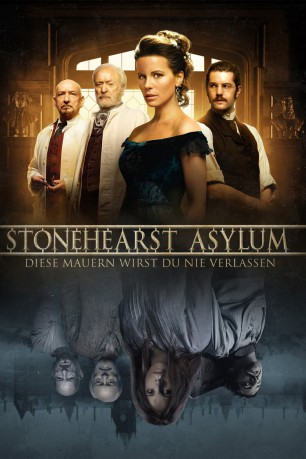

#3281 Stonehearst Asylum - Diese Mauern wirst du nie verlassen
Alternativ: Stonehearst Asylum (Englischer Titel)
 
 IMDB-Wertung: 6.8 / 10
IMDB-Wertung: 6.8 / 10  Metascore: 52
Metascore: 52 
Am Weihnachtsabend 1899 erreicht Edward Newgate die Tore der Irrenanstalt Stonehearst. Der junge und unerfahrene Psychologe sucht nach seiner ersten Anstellung, um endlich auch praktische Erfahrung sammeln zu können. Er wird mit offenen Armen von Anstaltsleiter Dr. Lamb empfangen, der dem angehenden Arzt die Räumlichkeiten und Methoden seiner Arbeit zeigt. Unter den Patienten befindet sich auch Eliza Graves, die von Anfang an eine geheimnisvolle Anziehung auf Edward ausübt. Anders als üblich werden die Insassen hier nicht betäubt oder gefesselt, sondern können sich frei entfalten und ihren Wahnsinn ausleben. Doch als Edward verdächtigen Geräuschen in die dunklen Keller des Gebäudes folgt, entdeckt er einen eingesperrten Mann, der behauptet Dr. Salt, der eigentliche Leiter der Einrichtung, zu sein...
Jahr: 2014
Dauer: 112 Minuten
FSK: 16
Land: USA Studio: Millennium EntertainmentTonspuren: DTS - ,
Untertitel: Deutsch, Englisch,
Auflösung: 1080p (1920x800) Größe: 5242 MB
Genre: Thriller, Horror, Drama, Mystery
Regisseur: Brad Anderson
Drehbuch: Edgar Allan Poe, Joe Gangemi
Soundtrack: John Debney
Darsteller:
 Kate Beckinsale als Eliza Graves
Kate Beckinsale als Eliza Graves Jim Sturgess als Edward Newgate
Jim Sturgess als Edward Newgate David Thewlis als Mickey Finn
David Thewlis als Mickey Finn Brendan Gleeson als The Alienist
Brendan Gleeson als The Alienist Ben Kingsley als Silas Lamb
Ben Kingsley als Silas Lamb Michael Caine als Benjamin Salt
Michael Caine als Benjamin Salt Jason Flemyng als Swanwick
Jason Flemyng als Swanwick Sophie Kennedy Clark als Millie
Sophie Kennedy Clark als Millie Sinéad Cusack als Mrs. Pike
Sinéad Cusack als Mrs. Pike- Edmund Kingsley als Charles Graves
- Ciara Flynn als Farmer's Daughter
 Christopher Fulford als Paxton
Christopher Fulford als Paxton Guillaume Delaunay als Arthur Timbs
Guillaume Delaunay als Arthur Timbs- Dejan Angelov als Filthy Man
 Velizar Binev als Loud Man
Velizar Binev als Loud Man- Ekaterina Stoyanova als Curios Follower
- Kalin Vrachanski als Red Coat #3
- Marin Yanev als Smiler
- Robert Hands als Elegant Lady
- Andrew Dallmeyer als Jeremiah
- Krasimir Nedev als Napoleon
- Anton Trendafilov als Balzoni
- Stefan Shterev als Finn's Goon #1
- Malin Krastev als Finn's Goon #2
- Yordan Zahariev als Farmer
- Gabrielle Downey als Blind Women
- Petya Kamenova als Maid
- Petya Dimanova als Nun
- Marta Gutiérrez-Abad als Nurse
- Velizar Velichkov als Student #1
- Asen Mutafchiev als Student #2
- Moni Zarev als Drummer Boy
- Krassimir Gospodinov als Hunchback Chef
- Jivka Gancheva als Baby Doll
- Yordan Bikov als Lamp Man
- Ruslan Mainov als Opera Man
- Joreta Nikolova als Sad Woman
- Velimer Velev als Schitzo
- Teodor Yordanov als Boiler Room Attendant #1
- Andrey Slabakov als Boiler Room Attendant #2
- Nikolay Stanoev als Dinner Guest
- Stoyan Aleksiev als Doctor
- Krasimir Kutsurapov als Guest
- Aleksandra Spasova als Pregnant Woman
- Darin Angelov als Red Coat #1
- Hristo Mitzkov als Red Coat #2
- Ivo Kehayov als Gun 2
Datei: X:\2014(N-Z)\Stonehearst Asylum - Diese Mauern wirst du nie verlassen (2014, FSK16, 1920x800).mkv seit 03.03.2016
Festplatte: HD 2013(I-Z)-2014(A-Z)
 Es gibt insgesamt 163 Filme in der Gruppe '2014(N-Z)'
Es gibt insgesamt 163 Filme in der Gruppe '2014(N-Z)'